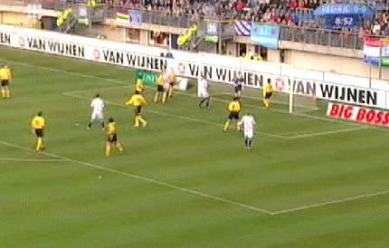
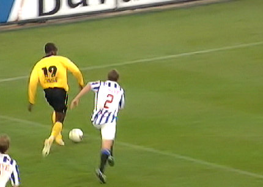
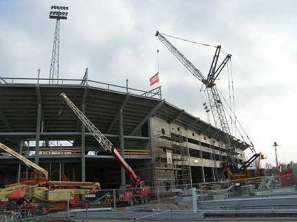
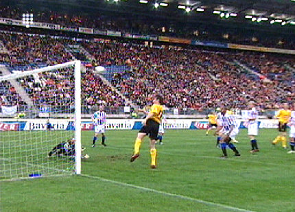
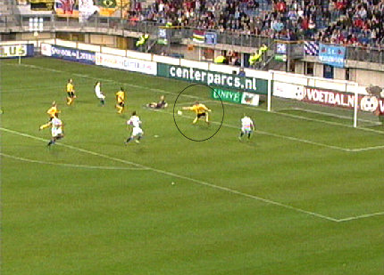
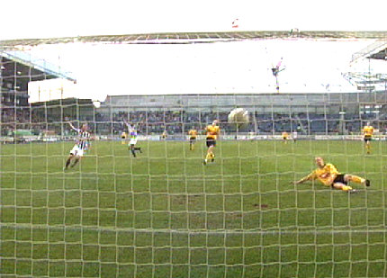
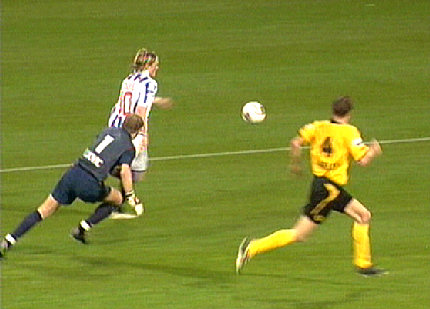
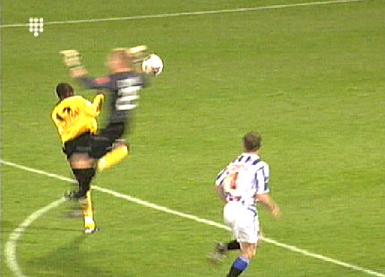
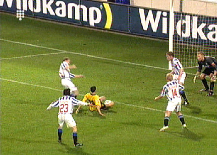
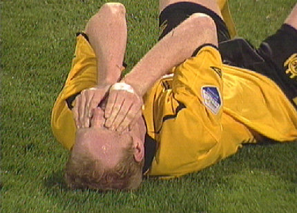

|
SC
Heerenveen - Roda JC (1-0) 26 april 2006
|
Goede support, verkeerde sjaal...

Uit een corner vanaf rechts kopt Prager de bal op de lat.

Cissé, snel maar niet doeltreffend. Zijn schot belandt eveneens op de lat.
Ruim honderd Rodasupporters in een halfleeg stadion.

Een stadion dat nog steeds in de uitbreidingsfase verkeert.

Een hoekschop van Bodor wordt door Saeijs doel gekopt maar doelman
Vandenbussche redt fabelachtig. In de rebound kopt Oper voor een leeg
doel op de lat.

Lachambre wil een schot van Pranjic wegwerken.....

..... maar schiet helaas in eigen doel: 1-0, (29').

Vlak voor rust voorkomt Saeijs dat Nilsson scoort.

Cissé mist een enorme kans, systematisch voor de gehele wedstrijd. Roda
kan niet afronden.

Sergio krijgt de bal er niet in gefrommeld.

Lachambre ligt op het gras en Roda ligt uit de play-offs. Er zijn over twee
wedstrijden te veel kansen gemist.
© Koempels Pleasure Dome
|